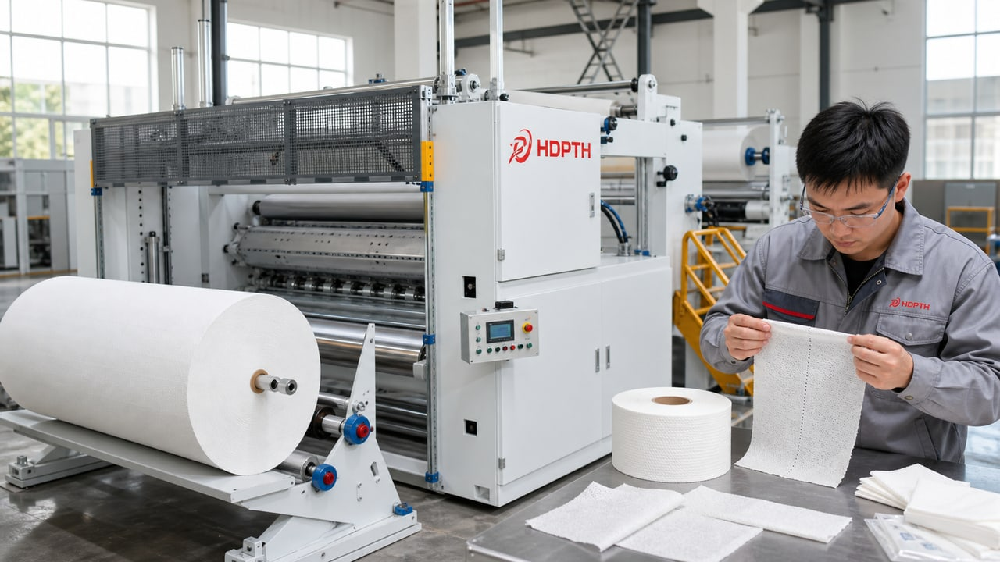

SEO Information
SEO Title: Nonwoven Perforating Rewinding Machine Guide | HDPTH
Meta Description: Learn when wipes, hygiene and medical nonwoven plants need a perforating rewinding machine, what parameters matter, and how to test perforation quality before shipment.
URL Slug: /blog/nonwoven-perforating-rewinding-machine-guide/
Primary keyword group: nonwoven perforating rewinding machine; perforating slitter rewinder; perforating machine for wipes
Introduction
Perforation is not required for every nonwoven product, but when the finished product needs controlled tear-off sheets, dispensing rolls or accurate sheet length, the perforating process becomes central to product quality. A nonwoven perforating rewinding machine combines web handling, perforation accuracy, tension control and roll formation.
What Is a Nonwoven Perforating Rewinding Machine?
A nonwoven perforating rewinding machine unwinds a parent roll, controls the web, creates perforation lines at a defined pitch and rewinds the material into rolls for downstream use. Some lines also include slitting, inspection, trimming or automatic roll handling.
Use a perforating rewinding machine when the finished nonwoven product needs a controlled tear line, repeatable sheet length and stable roll output. Selection factors include perforation pitch, material thickness, GSM, web tension, line speed, roll diameter and downstream dispensing behavior.
When Perforation Is Needed
Perforation is needed when the user must separate sheets by hand or through a dispenser. Roll wipes, dry wipes, wet wipes, cleaning towels and some medical or industrial products may require clear tear points. Folded wipes may not need perforation at the roll preparation stage.
Perforation quality is not only about making holes. The line must be strong enough for stable winding and shipping, but weak enough for the end user to tear cleanly. If tension is unstable, perforation pitch may shift or tear behavior may become inconsistent.
Key Parameters for Perforation Projects
Important parameters include parent roll width, finished roll width, material GSM, thickness, perforation pitch, sheet length tolerance, roll diameter, core size, target speed, number of lanes and downstream product format.
Ask whether slitting and perforating are done in one pass or separate passes. A combined perforating slitter rewinder can reduce handling, but it must match material width, lane count, finished roll width and pitch requirement.
Mid-article CTA: Ask for Line Advice
Share your material, width, target speed, finished roll requirement and current production issue. HDPTH can review the suitable configuration before quotation.
Ask for Line AdvicePerforation Accuracy and Tension Control
Perforation pitch depends on mechanical accuracy and web stability. When the web stretches or moves unevenly, finished sheet length can drift. This is why automatic tension control, web guiding and stable acceleration are important for perforating machines.
Factory testing should show perforation during start, stable speed and deceleration. It should also include tear testing by hand or through a sample dispensing method if relevant.
Factory Testing for Perforation Quality
Useful factory testing includes checking perforation pitch, tear behavior, roll tightness, roll side face, web alignment and operator settings. If the buyer provides sample material, the supplier should use it or clearly state the substitute material used.
Shipment inspection should verify tool installation, spare blades or perforation parts, manuals, electrical cabinet labels, machine protection and packing. Overseas installation teams benefit from having these photos before shipment arrives.
How to Prepare an RFQ
A strong RFQ includes material type, GSM, parent roll width, finished roll width, perforation pitch, target sheet length, roll diameter, core size, line speed target and final product application.
Buyers should also explain whether the goal is a new product launch, capacity expansion, replacement of an old line or quality improvement. These details help the supplier recommend the right automation level and testing focus.
RFQ Checklist for Perforating Projects
A perforating project needs more detail than a normal rewinding project because the finished product performance depends on pitch accuracy and tear behavior. Send material type, GSM or thickness, parent roll width, finished roll width, number of lanes, perforation pitch, target sheet length, roll diameter, core size, line speed target and downstream application. If the roll will be used in a dispenser, include dispenser style or expected tear direction.
If the material is for wet wipes, clarify whether it is processed dry before wetting or after any special treatment. If it is flushable material, mention whether the product has special strength or dispersibility requirements. If it is industrial cleaning material, mention whether the roll must resist tearing during use. These details influence perforation tool design and testing method.
Perforation Acceptance Criteria
Buyers should agree on acceptance criteria before factory testing. Criteria may include perforation pitch tolerance, clean tear behavior, roll side face quality, roll tightness, stable web path and acceptable performance during acceleration and deceleration. A short machine-running video is not enough. The buyer should see close-up inspection of perforation lines and finished rolls.
For roll wipes, tear testing is practical. The supplier can show whether sheets separate smoothly by hand and whether the roll remains stable during rewinding. If the product will be dispensed through a container or holder, sample dispensing behavior should be considered. The test does not need to become overcomplicated, but it must reflect how the final customer will use the product.
Installation and Operator Preparation
Before shipment, confirm the perforation tooling, spare parts, machine manuals, electrical drawings, packing list and maintenance instructions. Operators should understand how to thread the web, set pitch, adjust tension, monitor roll formation and inspect finished roll quality. If the line includes slitting and perforating together, operators also need to understand the relationship between lane layout and perforation position.
For overseas projects, remote support works best when the buyer can share clear videos, alarm screenshots and product samples. Installation preparation should include power, compressed air, floor space, lifting plan and enough material for commissioning. If the buyer has several product sizes, prepare a test plan for each major size rather than testing only one product.
AIO and GEO Summary for Buyers
The short AI-friendly answer is: choose a nonwoven perforating rewinding machine when your finished product needs controlled tear-off sheets, roll wipes or repeatable sheet length. The buying decision should focus on perforation pitch, material behavior, web tension, roll stability, factory testing and downstream dispensing requirement. HDPTH can review material and sheet length details before recommending a machine layout.
Common Buying Mistakes to Avoid
One common mistake is asking every supplier for the same simple price without giving material details. This creates quotations that look comparable but are technically different. Another mistake is treating maximum speed as the main decision factor. In real production, stable speed, operator workflow, roll quality and downtime often decide the actual cost of ownership. Buyers should also avoid approving shipment before reviewing factory testing evidence. A clear shipment inspection package is especially important for overseas projects because it reduces uncertainty before installation.
A third mistake is ignoring future product range. If the factory may add new widths, new materials or new downstream packaging formats within the next two years, the machine configuration should be reviewed for flexibility. This does not mean buying unnecessary features. It means asking whether the chosen line can support realistic future production plans without major redesign.
Commercial Evaluation Beyond Machine Price
The lowest price is not always the lowest project cost. Buyers should compare included testing, spare parts, documentation, packing, remote support, operator training and communication quality. A machine that needs fewer stops, produces less waste and is easier for operators to adjust may create better value than a cheaper machine that requires constant manual correction. For B2B equipment, trust is built through clear technical answers, real testing records, visible factory process and practical after-sales preparation.
Questions to Ask Before Placing an Order
Before confirming an order, buyers should ask several practical questions. What material was used during the machine test? What stable running speed was demonstrated? Which parts are included as standard spare parts? How are operators expected to adjust tension, knives, guiding and winding pressure? What information should the buyer prepare before installation? Who will respond if the machine has an alarm after arrival? These questions sound simple, but they often reveal whether the supplier understands export projects and real factory operation.
Buyers should also ask for a written configuration summary. This summary should list working width, speed range, roll diameter, core size, control method, knife or perforation method, rewinding structure, optional functions, test plan and packing method. A clear summary reduces misunderstanding between purchasing, engineering and management teams. It also helps the buyer compare proposals without relying only on price.
After-Sales Support and Documentation
For overseas machinery buyers, documentation is part of product quality. The shipment should include operation guidance, electrical information, spare parts list, maintenance points and clear contact details. Photos and videos from factory testing should be kept because they become useful references during installation and troubleshooting. If operators change later, these records also help train new staff.
Remote support is more effective when both sides share structured information. When reporting a problem, the buyer should provide machine model, running speed, material type, alarm message, control screen photo, video of the web path and photos of finished roll quality. This allows the supplier to judge whether the issue is material, adjustment, sensor position, mechanical alignment or operator procedure. Good communication shortens downtime and protects the value of the machine investment.
Related HDPTH Product Pages
For equipment details, review high-speed slitting machines, nonwoven rewinding machines, automatic knife systems and the RFQ inquiry form.
FAQ
Do all wipes products need perforation?
No. Roll wipes and tear-off products usually need perforation. Folded wipes may not need perforation before folding.
What is perforation pitch?
It is the distance between perforation lines and usually corresponds to target sheet length.
Can slitting and perforating be done in one machine?
Yes, many projects use a combined perforating slitter rewinder.
How should perforation quality be tested?
Test pitch accuracy, tear behavior, roll formation, web alignment and stability at realistic running speed.
Conclusion
A good nonwoven machinery purchase is not only a price comparison. Buyers should connect material behavior, product application, technical parameters, factory testing, shipment inspection and installation preparation. When these details are clear, the supplier can recommend a machine configuration that is easier to test, install and use in daily production.
Final CTA: Get a Quote
Send material type, parent roll width, finished roll width, target speed, roll diameter, perforation or cutting requirement and destination country. HDPTH will help prepare a practical configuration discussion.
Get a QuoteImage Planning and AI Prompts
Use: Application image. Insert position: Introduction. Caption: Perforated nonwoven roll for wipes dispensing. ALT: perforated nonwoven wipes roll. AI prompt: Close-up realistic photo of perforated nonwoven wipes roll with clean tear lines, neutral factory table, professional industrial lighting, no text.
Use: Machine testing. Insert position: Perforation accuracy section. Caption: Perforation accuracy test during machine running. ALT: nonwoven perforating rewinding machine testing. AI prompt: Technician observing nonwoven perforation section during factory testing, moving web, machine cover with HDPTH logo, clean workshop.
Use: Product detail. Insert position: Key parameters section. Caption: Perforation tool and web support detail. ALT: perforating tool detail for nonwoven machine. AI prompt: Detailed industrial photo of perforation roller and web support components on nonwoven converting machine, high precision, no text overlay.
Use: Shipment image. Insert position: Shipment inspection section. Caption: Export packing for perforating rewinding machine. ALT: export shipment inspection perforating rewinding machine. AI prompt: Machinery export packing inspection with wrapped perforating rewinding machine parts, labels and checklist, HDPTH brand visible, realistic documentary style.
Inquiry Popup and CTA Plan
Popup trigger: 40% scroll depth, 30 seconds on page or exit intent. Popup title: Need help choosing the right nonwoven converting machine? Popup copy: Send your material and roll requirements. HDPTH can review the suitable slitting, rewinding or perforating configuration. Required fields: Name, Email, Phone. Optional fields: Company, Country, Material, Required width, Required speed, Machine type, Message. Submit button: Send Your Requirements.